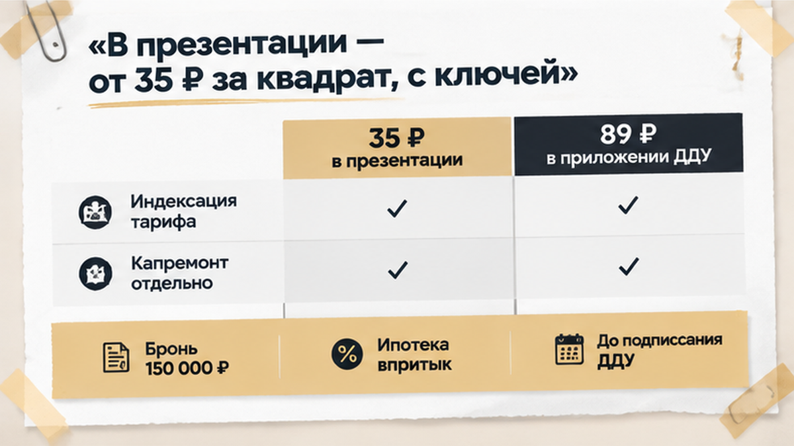
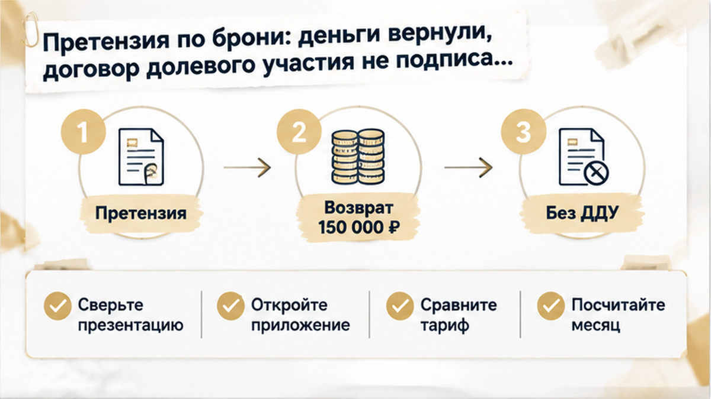
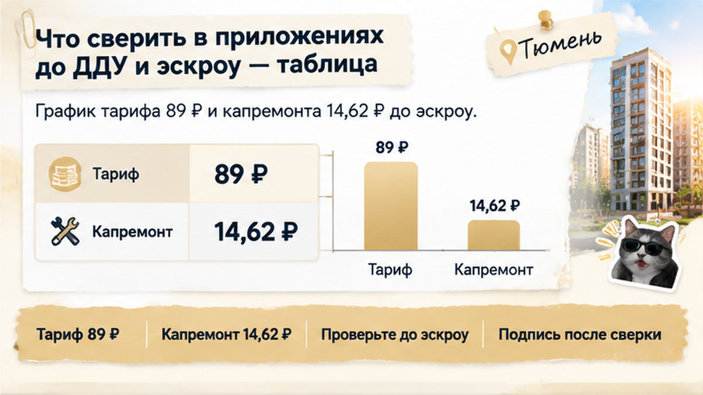

В Тюмени семья внесла 150 тысяч за бронь квартиры в новостройке, а в приложении к ДДУ нашла 89 ₽ за квадрат вместо 35 ₽ из презентации — и банк урезал ипотеку примерно на 620 тысяч. Дата подписания уже стояла в календаре, предодобрение лежало в почте, расчёт сходился впритык — такая потеря ломала его целиком. Цифру поменял не банк и не ставка, а одна строка в приложении № 3, которую никто не сверил со слайдом. Сверху стояли индексация и отдельная строка капремонта. Расскажу изнутри, как это вскрылось и почему семья ушла без подписи, но с деньгами за бронь.
Разбираю сделки с новостройками в Тюмени на живых документах, без запугивания. Если у вас на столе проект ДДУ и цифры не бьются с тем, что показывали в офисе продаж, пишите в Telegram или в MAX.

Всё началось в офисе продаж. Макет дома под стеклом, планировки на экране, менеджер листает слайды: двор без машин, колясочная, консьерж.
На одном слайде крупно: «Содержание — от 35 ₽/м² с ключей».
Семья посчитала просто. Квартира около 60 квадратов, это примерно 2 100 ₽ в месяц. Эту сумму положили в бюджет рядом с будущим платежом по ипотеке и успокоились.
Обычный покупатель рассуждает так: «Это же официальная презентация застройщика, значит, так и будет». Человек, который ведёт сделки, смотрит иначе. Скажу то, что в офисе продаж вслух обычно не говорят.
Презентация, рекламный PDF, сообщение в мессенджере договором не являются. По 214-ФЗ, закону о долевом строительстве, вас связывает ДДУ со всеми приложениями. Его регистрируют, и на него потом опираются в споре. Проектная декларация тоже нужна и полезна, но читать конкретный договор, который дали на подпись, она не отменяет.
А слово «от» на слайде застройщика ни к чему не обязывает.
Дальше всё шло по обычной схеме. Семья подписала договор бронирования и внесла 150 000 ₽, квартиру сняли с продажи на время подготовки сделки. Банк выдал предварительное одобрение. Сумма кредита, первый взнос и ежемесячный платёж уложились в расчёт. Впритык, но уложились.
Здесь люди часто путают два вида денег, и это дорогая путаница.
Бронь платят по отдельному соглашению с застройщиком или агентом. Когда и как её возвращают, написано только в этом соглашении.
Эскроу — это специальный счёт в банке. Туда покупатель кладёт деньги за квартиру, а застройщик получит их только после сдачи дома. Открывают его в связке с ДДУ, а до регистрации договора сделка вообще ничем не закреплена.
Проще говоря, бронь не эскроу и тех гарантий не даёт.
С одобрением то же самое. «Банк одобрил» звучит как финал, но предварительное одобрение даётся по данным на сегодня. Если всплывут новые регулярные расходы заёмщика, банк оставляет за собой право пересчитать. А как именно он эти расходы учитывает, у каждого кредитора своя методика.
В этой истории запас прочности и так был тонкий, поэтому любая новая строка в расходах била сразу по лимиту.
Расскажу изнутри, как это обычно бывает. Проект ДДУ присылают за несколько дней до подписания. Основной текст читают внимательно, строчка за строчкой. Приложения пролистывают: там таблицы, мелкий шрифт, кажется, что «техническое».
Здесь было так же. А потом жена открыла приложение № 3 и прочитала вслух: «Восемьдесят девять за метр. И индексация каждый год. И капремонт отдельно».
Считаем на 60 квадратов. Около 5 300 ₽ в месяц только за содержание. Сверху капремонт. Каждый год сверху ещё индексация. В презентации было около 2 100 ₽. Разница уже не в рублях, а в разы.
Обычный покупатель в этот момент кричит «незаконно!». Профи сначала спрашивает: «А что именно входит в эту строку?»
Объясню простыми словами. По статье 156 Жилищного кодекса содержание жилья и капремонт — разные платежи. Содержание — это обслуживание дома: уборка, лифты, общие системы, то, что записано в перечне работ. Капремонт — отдельный взнос в фонд. Коммуналка, охрана, шлагбаум и решения будущего собрания собственников — ещё отдельные истории.
Поэтому 35 ₽ со слайда и 89 ₽ плюс капремонт из приложения нельзя сразу считать одной и той же услугой. Нужна расшифровка каждой строки. Без неё спорить не о чем.
И вот что меня самого зацепило. Официальный минимальный взнос на капремонт в Тюменской области — 14,62 ₽/м² с 1 июля 2025 года (ФКР Тюменской области, постановление № 395-п). В конце сентября 2026 года в СМИ обсуждали проект поднять минимум до 15,20 ₽/м² с 1 октября. Но это пока проект, а не действующий тариф.
В любом случае региональный капремонт никак не объясняет 89 ₽ за содержание. Тем более капремонт в приложении и так стоял своей строкой.
Похожий разрыв между обещанием и бумагой я уже разбирал на приёмке: в ДДУ обещали чистовую, на приёмке голые стены. Правило одно: верить тому, что подписано, а не тому, что показали на экране.
Дальше семья сделала то, что многие делать боятся. Не промолчала. Передала банку уточнённые данные о будущих обязательных расходах.
Банк пересчитал полную ежемесячную нагрузку. И урезал предварительно одобренную сумму примерно на 620 000 ₽.
Сразу оговорюсь: это цифра именно этой истории, а не правило для всех. Единой формулы, как банк учитывает плату за содержание, нет. Один кредитор смотрит так, другой иначе. Но сам принцип простой: выросли обязательные расходы — банк считает, что на ипотеку у вас остаётся меньше.
Ключевая ставка ЦБ — 14,00% с 24 июля 2026 года. Запас прочности у большинства семей и так тонкий. Здесь бюджет и раньше сходился впритык.
Минус 620 тысяч на практике означает три дороги. Срочно искать деньги на взнос. Брать квартиру меньше. Или выходить из сделки.
Похожие развилки перед ДДУ я уже описывал: накануне ДДУ банк поднял ставку, за шесть дней до ДДУ сорвалось одобрение без взноса, за два дня до ДДУ страховка подняла платёж.
Здесь триггер другой. Не ставка и не полис. Одна строка в приложении, которую вовремя никто не положил рядом с презентацией.

Снова офис продаж. Только теперь на столе не макет дома, а два листа рядом: распечатанный слайд с «от 35 ₽» и приложение № 3 с 89 ₽.
Менеджер держался спокойно. «Подпишите сейчас, а с управляющей компанией разберётесь после ключей».
Не сработало, тогда второй заход: «Давайте посмотрим квартиру в другом корпусе».
Семья отказалась от обоих вариантов. И правильно. «Разберётесь после ключей» значит одно: двадцать лет ипотеки под цифру, которую уже никто не поменяет.
Мы подняли договор бронирования и сели писать письменную претензию. Без эмоций, по пунктам:
— расходы, которые показали при продаже, не совпали с проектом ДДУ;
— из-за этого банк изменил лимит;
— на прежних условиях сделка невозможна;
— верните 150 000 ₽.
Через какое-то время деньги вернули.
ДДУ не подписан. Эскроу-счёт не открывали. В другой корпус не переходили. Бронь на руках.
Теперь честно, чтобы никто не понял меня неправильно. Бронь сама собой не возвращается. Всё решает то, что написано в вашем договоре бронирования. Здесь сработали три вещи: формулировки соглашения, претензия на бумаге и расхождение, которое видно глазами, а не «менеджер сказал».
Если в презентации 35 ₽, а в ДДУ 89 ₽ за квадрат — вы подписали бы, чтобы не потерять бронь, или развернулись бы сразу?
После этой истории я кладу такую таблицу рядом с каждым проектом договора. Не потому, что «везде обманут». А потому, что сверить цифры до эскроу — это полчаса. После эскроу — уже спор.
| Что сверить | Где смотреть | Что спросить |
|---|---|---|
| Плата за содержание | Презентация и приложения к проекту ДДУ | Совпадает ли цифра и что входит в перечень работ |
| Индексация | Приложение с тарифами | С какой даты, как часто и по какому принципу |
| Капремонт | Отдельная строка в приложении | Это региональный минимум (сейчас 14,62 ₽/м²) или иная сумма |
| Платные сервисы | Приложения и проект договора с УК, если его дают | Охрана, шлагбаум, консьерж: входят в содержание или отдельно |
| Условия брони | Договор бронирования | В каких случаях и в какой срок возвращают деньги |
| Лимит ипотеки | Предварительное одобрение банка | Как изменится сумма, если добавятся обязательные расходы |

И порядок, коротко:
Если нужно, сверю приложения к вашему ДДУ с презентацией до подписания. Напишите в Telegram или MAX.
Семья квартиру пока не купила. Но и в ловушку не попала.
Они остановились за шаг до ДДУ и эскроу. Не подписали двадцать лет ипотеки под цифру, которая жила только на слайде. Бронь вернулась, одобрение банка осталось запасом для следующего варианта. Теперь они выбирают уже с таблицей в руках, а не с презентацией.
Пока ДДУ не зарегистрирован, у вас есть окно. Застройщик не враг. Но подписываете вы не презентацию, а договор.